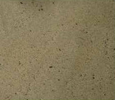
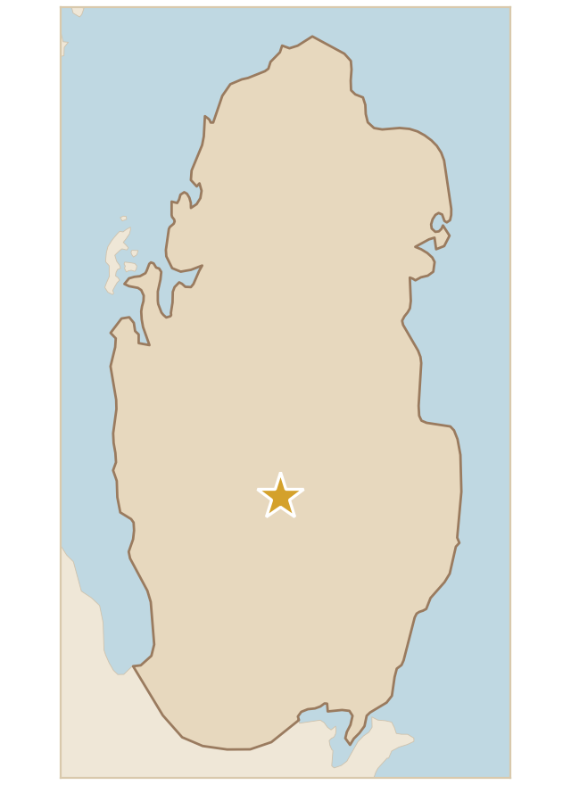

رمل ناعم جدًا ومتجانس، لونه بني فاتح، يُعرف بـ«الرمل المغسول»، وهي تربة معتمدة للتداول في دولة قطر للمشروعات الزراعية وتأسيسات البنى التحتية في أعمال تنسيق الحدائق، وتستخدم على نطاق واسع.
Very fine, uniform sand, light brown in colour, known as “washed sand”. It is a soil approved for trade in the State of Qatar for agricultural projects and infrastructure foundations in landscaping works, and it is widely used.